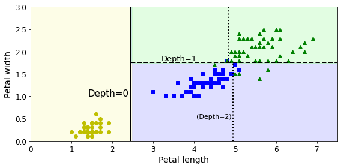
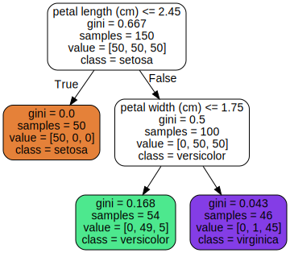

In this tutorial, we will explore how to create a Decision Tree classifier using the popular Iris Flower dataset. The Iris dataset is widely used for machine learning classification tasks due to its simplicity and well-defined features. It consists of 150 samples of iris flowers, each characterized by four features: sepal length, sepal width, petal length, and petal width. The goal of our classification task is to predict the species of iris based on these features.
A Decision Tree is a flowchart-like tree structure where each internal node represents a decision based on a feature, each branch represents the outcome of that decision, and each leaf node represents a class label. Decision Trees are popular for their interpretability and ease of use, making them a great starting point for classification tasks.
To start our Decision Tree tutorial, we need to ensure that the correct Python version and required libraries are available for our implementation.
# Python ≥3.5 is required
import sys
assert sys.version_info >= (3, 5)
# Scikit-Learn ≥0.20 is required
import sklearn
assert sklearn.__version__ >= "0.20"
# Common imports
import numpy as np
import os
# to make this notebook's output stable across runs
np.random.seed(42)
# To plot pretty figures
%matplotlib inline
import matplotlib as mpl
import matplotlib.pyplot as pltassert sys.version_info >= (3, 5): This line checks
if the Python version is 3.5 or higher, which is necessary for
compatibility with the libraries we will use.assert sklearn.__version__ >= "0.20": This ensures
that the installed version of Scikit-Learn is 0.20 or higher, as earlier
versions may not support some of the features we will be using.import numpy as np: Imports NumPy, a library for
numerical computing in Python, which will be used for array manipulation
and mathematical functions.import os: Imports the OS module to interact with the
operating system, which may be useful for file handling.np.random.seed(42): Sets a seed for NumPy's random
number generator to ensure reproducibility of results across multiple
runs of the notebook.%matplotlib inline: This magic command allows for the
display of Matplotlib plots directly in the notebook.import matplotlib as mpl and import matplotlib.pyplot as plt:
Imports the Matplotlib library, specifically the pyplot module, which
provides a convenient interface for creating static, animated, and
interactive visualizations in Python.In this step, we configure the Matplotlib settings for plot aesthetics and establish a directory for saving the figures generated during the tutorial.
mpl.rc('axes', labelsize=14)
mpl.rc('xtick', labelsize=12)
mpl.rc('ytick', labelsize=12)
# Where to save the figures
PROJECT_ROOT_DIR = "."
CHAPTER_ID = "decision_trees"
IMAGES_PATH = os.path.join(PROJECT_ROOT_DIR, "images", CHAPTER_ID)
os.makedirs(IMAGES_PATH, exist_ok=True)
def save_fig(fig_id, tight_layout=True, fig_extension="png", resolution=300):
path = os.path.join(IMAGES_PATH, fig_id + "." + fig_extension)
print("Saving figure", fig_id)
if tight_layout:
plt.tight_layout()
plt.savefig(path, format=fig_extension, dpi=resolution)mpl.rc('axes', labelsize=14), mpl.rc('xtick', labelsize=12), mpl.rc('ytick', labelsize=12):
These lines set the font sizes for the axes labels and tick labels in
the plots, improving readability.PROJECT_ROOT_DIR = ".": Defines the root directory of
the project. The . refers to the current directory.CHAPTER_ID = "decision_trees": Sets the chapter
identifier, which helps organize files related to this specific
tutorial.IMAGES_PATH = os.path.join(PROJECT_ROOT_DIR, "images", CHAPTER_ID):
Constructs the path where the images will be saved.os.makedirs(IMAGES_PATH, exist_ok=True): Creates the
directory for saving images if it does not already exist, preventing
errors from attempting to create an existing directory.def save_fig(fig_id, tight_layout=True, fig_extension="png", resolution=300)::
Defines a function to save figures with customizable options for layout,
file extension, and resolution.plt.tight_layout(): Adjusts the layout of the plot to
minimize overlap between elements, making it visually appealing.plt.savefig(path, format=fig_extension, dpi=resolution):
Saves the figure to the specified path with the chosen format and
resolution.In this step, we will load the Iris dataset and train a Decision Tree classifier using the petal length and width features.
from sklearn.datasets import load_iris
from sklearn.tree import DecisionTreeClassifier
iris = load_iris()
X = iris.data[:, 2:] # petal length and width
y = iris.target
tree_clf = DecisionTreeClassifier(max_depth=2, random_state=42)
tree_clf.fit(X, y)DecisionTreeClassifier(max_depth=2, random_state=42)from sklearn.datasets import load_iris: Imports the
function to load the Iris dataset, which is a well-known dataset for
classification tasks.iris = load_iris(): Loads the Iris dataset into the
variable iris.X = iris.data[:, 2:]: Selects the features for our
model. Here, we are using the petal length and width (the last two
columns of the dataset).y = iris.target: Extracts the target labels (species of
Iris) from the dataset.from sklearn.tree import DecisionTreeClassifier:
Imports the Decision Tree classifier from Scikit-Learn.tree_clf = DecisionTreeClassifier(max_depth=2, random_state=42):
Creates an instance of the DecisionTreeClassifier with a maximum depth
of 2 to prevent overfitting and ensures reproducibility by setting a
random seed.tree_clf.fit(X, y): Fits the Decision Tree model to the
features X and target y, training the model to learn the relationship
between the input features and the target labels.In this step, we will export the trained Decision Tree model to a DOT file format and visualize it using Graphviz.
from graphviz import Source
from sklearn.tree import export_graphviz
export_graphviz(
tree_clf,
out_file=os.path.join(IMAGES_PATH, "iris_tree.dot"),
feature_names=iris.feature_names[2:],
class_names=iris.target_names,
rounded=True,
filled=True
)
Source.from_file(os.path.join(IMAGES_PATH, "iris_tree.dot"))
from graphviz import Source: Imports the Source class
from the Graphviz library, which is used for visualizing the graph.from sklearn.tree import export_graphviz: Imports the
function to export the Decision Tree in DOT format.export_graphviz(...): This function exports the
structure of the trained Decision Tree to a .dot file.tree_clf: The trained Decision Tree classifier that we
want to visualize.out_file=os.path.join(IMAGES_PATH, "iris_tree.dot"):
Specifies the output file path where the DOT file will be saved.feature_names=iris.feature_names[2:]: Provides the
names of the features used in the model (petal length and width).class_names=iris.target_names: Specifies the names of
the classes (species of Iris) to be displayed in the visualization.rounded=True: Makes the nodes of the tree rounded in
the visualization for better aesthetics.filled=True: Fills the nodes with co`lors based on the
predicted classes, enhancing visual clarity.Source.from_file(os.path.join(IMAGES_PATH, "iris_tree.dot")):
Reads the DOT file and visualizes the Decision Tree structure within the
notebook.In this step, we will visualize the decision boundaries created by the trained Decision Tree classifier for the Iris dataset.
from matplotlib.colors import ListedColormap
def plot_decision_boundary(clf, X, y, axes=[0, 7.5, 0, 3], iris=True, legend=False, plot_training=True):
x1s = np.linspace(axes[0], axes[1], 100)
x2s = np.linspace(axes[2], axes[3], 100)
x1, x2 = np.meshgrid(x1s, x2s)
X_new = np.c_[x1.ravel(), x2.ravel()]
y_pred = clf.predict(X_new).reshape(x1.shape)
custom_cmap = ListedColormap(['#fafab0','#9898ff','#a0faa0'])
plt.contourf(x1, x2, y_pred, alpha=0.3, cmap=custom_cmap)
if not iris:
custom_cmap2 = ListedColormap(['#7d7d58','#4c4c7f','#507d50'])
plt.contour(x1, x2, y_pred, cmap=custom_cmap2, alpha=0.8)
if plot_training:
plt.plot(X[:, 0][y==0], X[:, 1][y==0], "yo", label="Iris setosa")
plt.plot(X[:, 0][y==1], X[:, 1][y==1], "bs", label="Iris versicolor")
plt.plot(X[:, 0][y==2], X[:, 1][y==2], "g^", label="Iris virginica")
plt.axis(axes)
if iris:
plt.xlabel("Petal length", fontsize=14)
plt.ylabel("Petal width", fontsize=14)
else:
plt.xlabel(r"$x_1$", fontsize=18)
plt.ylabel(r"$x_2$", fontsize=18, rotation=0)
if legend:
plt.legend(loc="lower right", fontsize=14)
plt.figure(figsize=(8, 4))
plot_decision_boundary(tree_clf, X, y)
plt.plot([2.45, 2.45], [0, 3], "k-", linewidth=2)
plt.plot([2.45, 7.5], [1.75, 1.75], "k--", linewidth=2)
plt.plot([4.95, 4.95], [0, 1.75], "k:", linewidth=2)
plt.plot([4.85, 4.85], [1.75, 3], "k:", linewidth=2)
plt.text(1.40, 1.0, "Depth=0", fontsize=15)
plt.text(3.2, 1.80, "Depth=1", fontsize=13)
plt.text(4.05, 0.5, "(Depth=2)", fontsize=11)
save_fig("decision_tree_decision_boundaries_plot")
plt.show()Saving figure decision_tree_decision_boundaries_plot

from matplotlib.colors import ListedColormap: Imports
the ListedColormap class to create custom color maps for
visualizations.Defining the plot_decision_boundary Function: This
function takes a classifier, features, target labels, axes limits, and
optional parameters to visualize the decision boundary of the
classifier.x1s and x2s: Creates linear space for the two feature
dimensions (petal length and width).X_new: Combines the mesh grid points into a 2D array
for predictions.y_pred = clf.predict(X_new).reshape(x1.shape): Uses the
classifier to predict class labels for all points in the mesh grid.plt.contourf(...): Creates filled contour plots
representing the decision regions.plt.figure(figsize=(8, 4)): Sets the size of the
figure.plot_decision_boundary(tree_clf, X, y): Calls the
function to plot the decision boundary using the trained Decision
Tree.save_fig("decision_tree_decision_boundaries_plot"):
Saves the plot to the specified path.plt.show(): Displays the final plot of decision
boundaries and training points.In this step, we will use the trained Decision Tree classifier to predict the class probabilities for a specific instance of iris flower with given petal length and width.
tree_clf.predict_proba([[5, 1.5]])array([[0. , 0.90740741, 0.09259259]])In this step, we will use the trained Decision Tree classifier to predict the class label for a specific instance of iris flower based on its petal length and width.
tree_clf.predict([[5, 1.5]])array([1])In this tutorial, we successfully built a Decision Tree classifier to predict the species of iris flowers based on their petal length and width. We walked through the essential steps, including data loading, model training, and visualizing the decision boundaries.
DecisionTreeClassifier from Scikit-Learn to train our model
on the Iris dataset, which is a well-known benchmark in machine
learning.Graphviz
enabled us to visualize the structure of the decision tree, providing
insights into how the model makes decisions based on the features.Decision Trees are intuitive and provide a clear understanding of the decision-making process, making them an excellent choice for both beginners and practitioners in machine learning. While they may not always yield the highest accuracy compared to more complex models, their interpretability and ease of use make them a valuable tool in many applications.
By following this tutorial, you should now have a foundational understanding of how to implement and visualize a Decision Tree classifier in Python using Scikit-Learn. Feel free to experiment with different parameters, visualize different datasets, and apply the same techniques to solve your own classification problems.